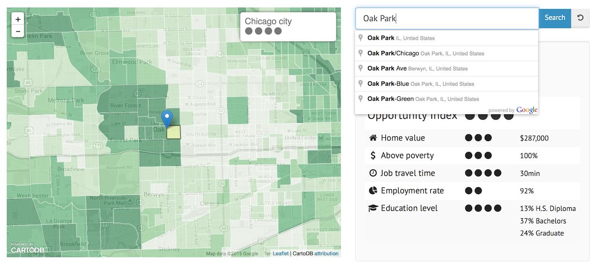

An interactive map to find opportunity for education, employment, fiscal capacity, income, and transportation for any place in Chicagoland.
You can find the opportunity index for any area in the Chicagoland region by browsing and clicking on the map, or by entering an address and clicking the search button. The map is colored in shades of green - the darker the color, the higher the opportunity.

When an area, which is made up of US Cencus Tracts, is highlighted, you'll see the opportunity index on a scale of 1 to 5, and five of the underlying opportunity indicators:
In November of 2013, the Chicago Metropolitan Agency for Planning published the Chicago region’s first Fair Housing and Equity Assessment.
This document, which was created in partnership with the Chicago Area Fair Housing Alliance, analyzes impediments to fair housing at the regional level and makes recommendations for affirmatively furthering fair housing.
The report highlights disparities in access to opportunity and provides a data-driven mapping of the opportunity-rich areas in the Chicago region. From this report and the mapping exercise, the idea to launch an interactive, user-friendly map was conceptualized.
The interactive opportunity map is a tool for housing counselors interested in providing search services for housing seekers making "opportunity moves."
With this tool, counselors can type in an address and access opportunity indicators for that particular census tract. Equipped with this information, counselors can provide more holistic information and housing seekers can make informed decisions regarding where they would like to live and what community factors are most important to them.
Where you live matters and CAFHA envisions a region where access to opportunity is equalized and concentrations of poverty are diminished.
An index is a way to summarize and weight attributes about something. This opportunity index attempts to measure the quality of life opportunities available to people living throughout Chicagoland.
The underlying opportunity indicators were categorized under: education, employment, fiscal capacity, income, and transportation- -- together forming an opportunity index.
Data sets for the opportunity index were divided into quintiles and averaged to determine an opportunity score for each census tract in the region. Fiscal capacity is measured at the municipal level and includes relevant local taxing bodies.
Opportunity is mapped using ten factors:
| Opportunity | HUD Factors | Additional Factors |
|---|---|---|
| Housing | Housing Stability Index | Median Home Value |
| Education | School Proficiency Index | Percent of Post-High School Degrees |
| Employment | Job Access Index | Unemployment Rate Poverty Rate |
| Transportation | Transit Access Index | Mean Travel Time to Work |
| Fiscal Capacity | Equalized Asset Value |
The U.S. Department of Housing & Urban Development (HUD) generated indices explained:
All the code for this site is open source. It was built with Jekyll, Bootstrap, Javascript, CartoDB and Leaflet and hosted on GitHub pages.
Technologies used:
All the code for this project is up on Github.
Found a bug or have a suggestion? pfron@cafha.net
The Chicago Area Fair Housing Alliance would like to acknowledge and thank the Chicago Community Trust for generously funding this project and DataMade for its expertise in creating the interactive map.